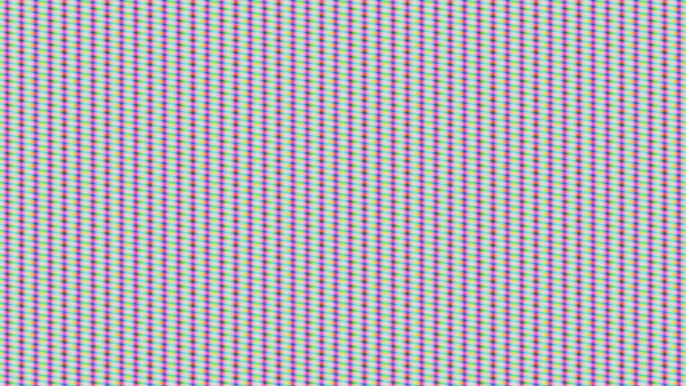

UE 场景渲染实验三次采样与 RGB 通道打包
同一组原创遮罩，从三张独立纹理变成一张打包纹理。对比材质结构、实际输出和渲染成本。
Separate · 三张纹理
Texture A.R + B.R + C.R → RGB
3 个 TextureSample 节点；共用同一组UV。
Packed · 一张纹理
Texture Packed.RGB → RGB
1 个 TextureSample 节点；保留三个数据通道。
同条件运行画面

六轮交错测量
Windows / RTX 4080 / D3D11 ES3.1 桌面移动预览，3840×2160。每轮运行6,000帧，取第3,500–5,499行；截图在统计窗口之后。下表列出每轮P50和三轮P50的中位数。
材质采样节点数量与整帧耗时分别记录。该平面上的测量用于分析纹理读取合并，手机GPU、复杂光照场景和压缩纹理需按各自条件评估。
怎样保持对照可解释
三张灰度图和打包图来自同一组1024×1024源字节；UV、过滤、曝光和输出公式保持一致。使用未压缩配置、关闭sRGB与流送，减少压缩误差和资源驻留变化的干扰。Unlit输出直接显示遮罩数值。
什么时候适合打包
适合共用UV、分辨率、Mip和更新频率的标量数据，例如同一资产的多个材质遮罩。打包后各通道共享资源生命周期；若原本的分辨率或UV需求不同，需要先判断合并成本。
实际项目中的独立灰度纹理也可采用R8或BC4。本案例以三张RGB灰度图为基准，资源数量减少不能直接当作相对所有格式的显存收益。压缩打包还需检查各通道误差。